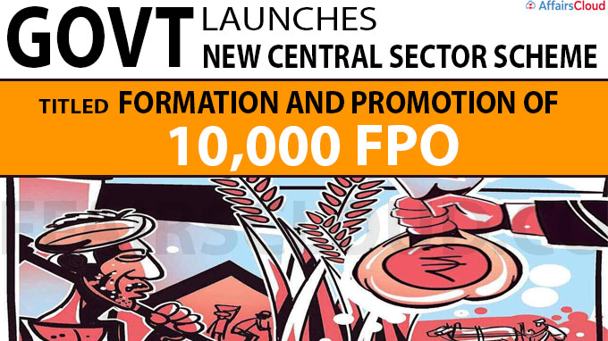

The Formation and Promotion of 10,000 Farmer Producer Organizations (FPOs) is a Central Sector Scheme launched by the Government of India and is managed by the National Bank for Agriculture and Rural Development (Nabard). The scheme aims to promote and support Farmer Produce Organisations with the help of nine recognized Implementing Agencies.
○ Interested farmers and organizations can get financial support, equity grants, and credit facilities.
○ It provides credit up to INR 18 Lakh per FPO for 3 years along with an equity grant of INR 2,000 per farmer member with a limit of 15.00 lakh per FPO.
○ It also furnishes credit guarantee facilities of up to Rs. 2 crore per FPO
○ Registered FPOs can avail of this scheme.
○ The scheme targets small and marginal farmers, farmer groups, cooperatives, and other entities involved in agriculture and allied activities.
The scheme is accessible through the designated Implementing Agencies (IAs) such as SFAC, NCDC, NABARD, and others.